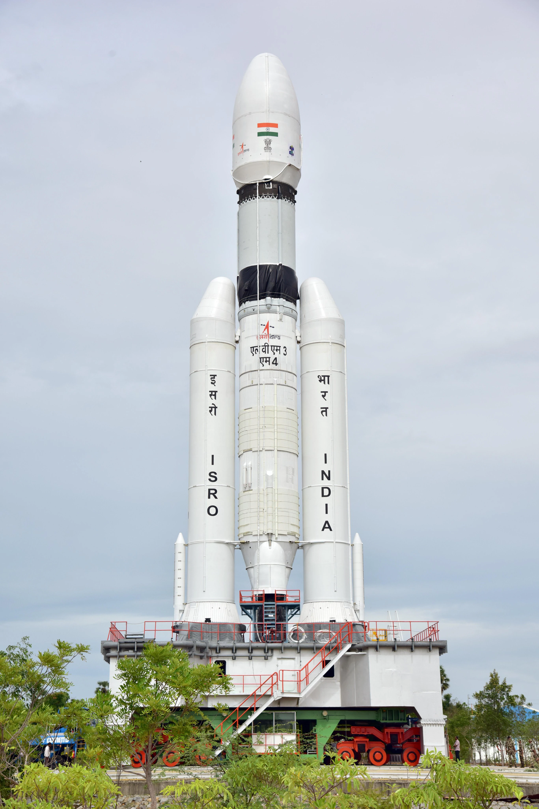
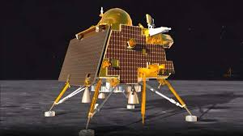
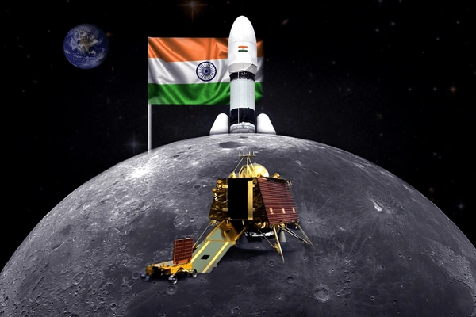
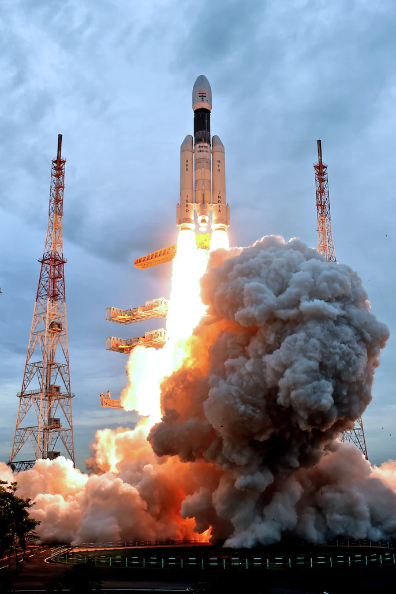
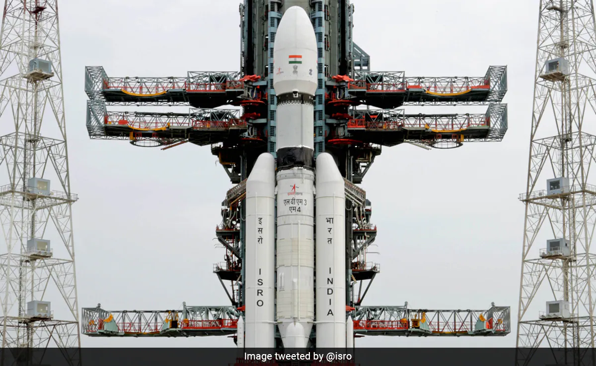

The mission that made history twice — India became the first nation to land on the Moon's south pole, and the fourth nation ever to achieve a soft lunar landing. Vikram touched down. Pragyan rolled out. The world watched.
Watch: Chandrayaan-3 Soft Landing — LiveChandrayaan-3 is ISRO's third lunar mission and India's most celebrated space achievement to date. Where Chandrayaan-2's Vikram lander crash-landed in 2019, Chandrayaan-3 succeeded perfectly — demonstrating end-to-end capability in safe landing and roving on the lunar surface.
On August 23, 2023, at 6:04 PM IST, the Vikram lander touched down at 69.37°S latitude near the Moon's south pole — a region no nation had ever reached before. The Pragyan rover rolled out shortly after, spending 14 Earth days exploring the lunar surface, collecting data, and making discoveries that stunned the global scientific community.
The mission cost ₹615 crore — less than many Bollywood blockbusters, and a fraction of what any other nation would have spent on a comparable mission.
The landing sequence began with Vikram firing its engines for the "rough braking phase" — slowing from 1.68 km/s to near zero over 11.5 minutes. This was the 17 minutes of terror that ISRO engineers had spent years preparing for.
At an altitude of 800 metres, Vikram switched to its fine braking phase, orienting itself vertically. Four throttleable engines guided it down with precision. At 150 metres, it hovered, scanned the surface for hazards using its Lander Hazard Detection and Avoidance Camera, then completed the final descent.
Touchdown. India had landed on the Moon's south pole — the first nation in history to do so. Prime Minister Modi, watching from South Africa, declared August 23 as National Space Day.
Within hours, the ramp deployed and Pragyan — a 6-wheeled rover carrying APXS and LIBS instruments — rolled onto the lunar surface for the first time.
Vikram Lander — named after ISRO founder Vikram Sarabhai. Four throttleable engines. Hazard detection cameras. Five instruments: ChaSTE (temperature), RAMBHA-LP (plasma), ILSA (seismometer), and NASA's Laser Retroreflector Array (LRA) — a passive instrument with no moving parts that will remain functional on the Moon for decades, allowing scientists on Earth to fire lasers at it and measure the precise Earth-Moon distance to millimetre accuracy.
Pragyan Rover — named after the Sanskrit word for wisdom. Six wheels. Solar powered. APXS (Alpha Particle X-ray Spectrometer) and LIBS (Laser-Induced Breakdown Spectroscope) instruments for elemental analysis of the lunar soil.
Swipe or click arrows to browse. Click any photo to zoom.




.jpg)